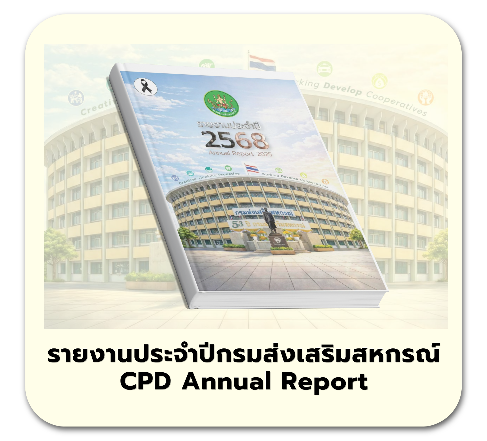
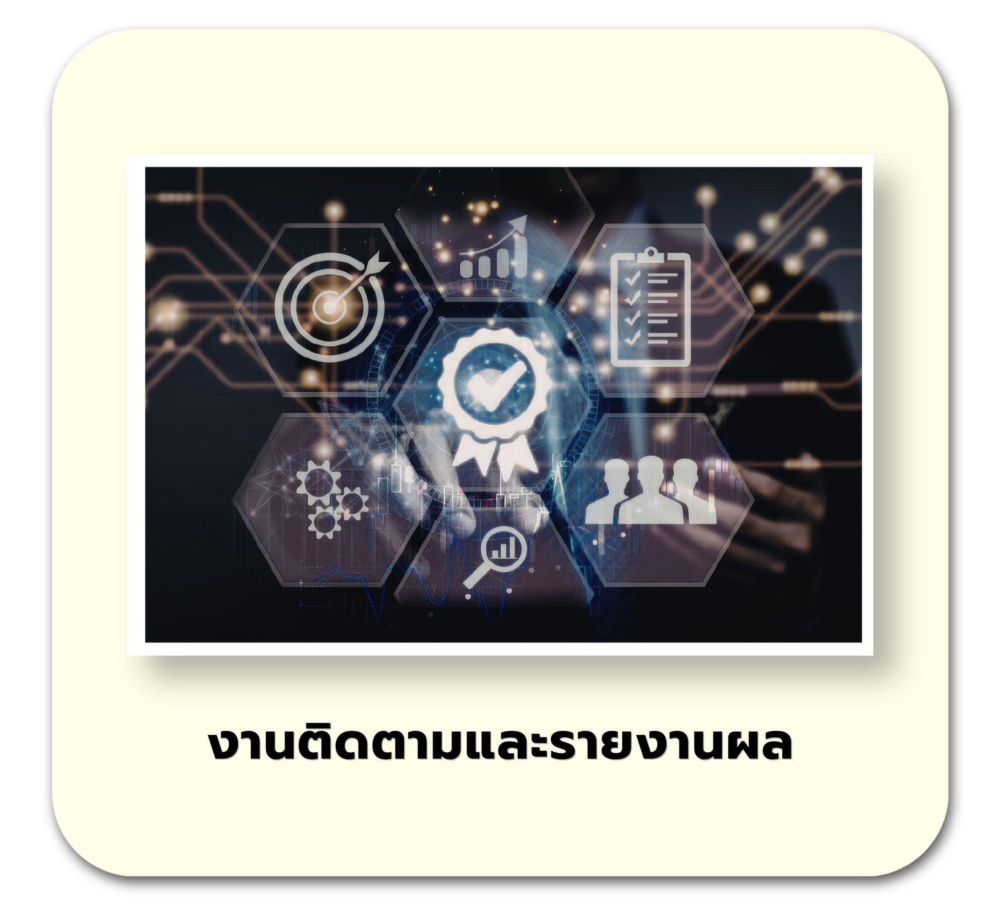
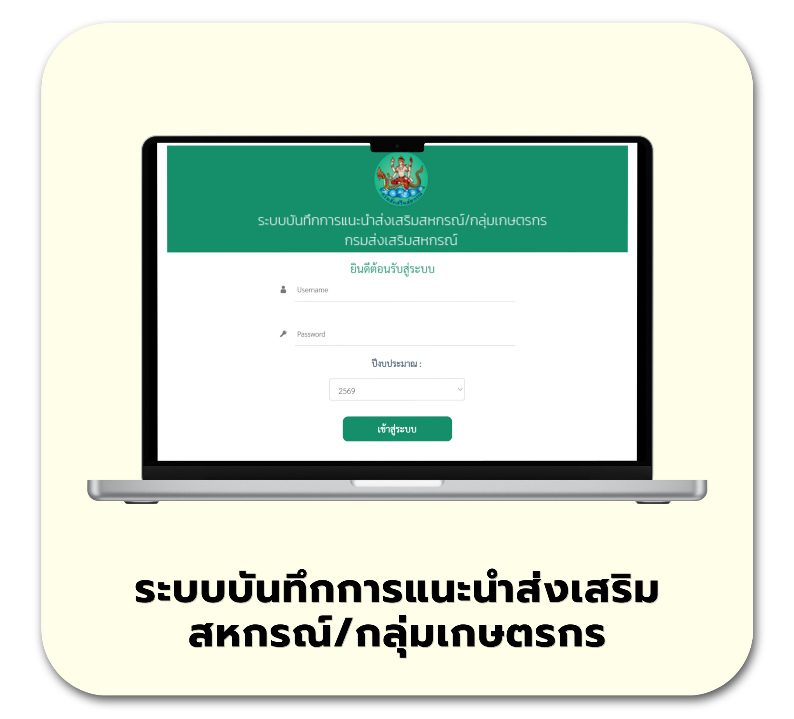
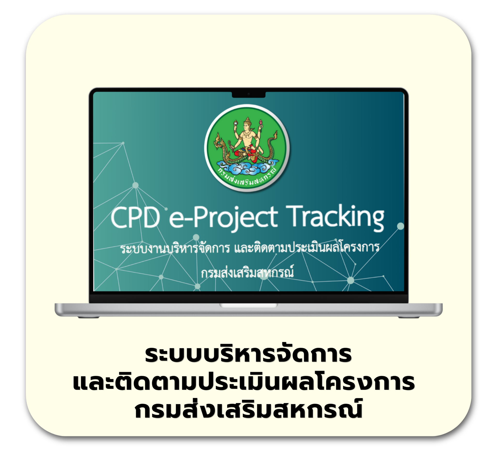

การประเมินผลการปฏิบัติงานและ
ผลการใช้จ่ายงบประมาณ
ของ สอจ. และ สสพ.
รายงานผลการดำเนินงาน/โครงการ
ของกรมส่งเสริมสหกรณ์

รายงานประจำปีกรมส่งเสริมสหกรณ์
CPD Annual Report

งานติดตามและรายงานผล

ระบบบันทึกการแนะนำส่งเสริม
สหกรณ์/กลุ่มเกษตรกร

ระบบบริหารจัดการและติดตาม
ประเมินผลโครงการ
กรมส่งเสริมสหกรณ์